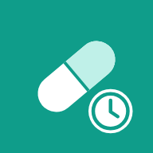

MediHoraAviso de privacidad y condiciones de uso
Última actualización: 14 de noviembre de 2026
1. Responsable
MediHora es responsable del tratamiento de tus datos personales. Para cualquier duda o solicitud sobre tus datos, escribe a alexoro.87@gmail.com.
2. Qué datos usa la app
- Medicinas y tratamientos: nombre, dosis, forma, horarios, duración, indicaciones y notas.
- Registro de tomas: si una toma se tomó u omitió, la hora y quién la registró.
- Tu nombre (el que escribes en Ajustes, por ejemplo «Mamá») y los nombres de las personas que agregas.
- Fotos de recetas que tú tomes o elijas, con el nombre del médico y la fecha si los escribes.
- Inventario de medicinas, si lo activas.
Estos datos se relacionan con tu salud, por lo que se consideran datos personales sensibles. Al usar la app y sus funciones nos das tu consentimiento expreso para tratarlos con las finalidades de este aviso. No pedimos tu correo, teléfono, ubicación ni contraseñas.
3. Dónde se guardan
- En tu teléfono: todo lo anterior se guarda solo en tu dispositivo mientras no compartas un perfil.
- Perfiles compartidos: si compartes el perfil de una persona con tu familia, sus medicinas, tomas, fotos de recetas y los nombres de los miembros se guardan en nuestro servidor (Supabase, con servidores en Estados Unidos) para que los vean solo las personas que tú invites con un código. Para esto la app crea una cuenta anónima, sin correo ni contraseña.
- Escanear receta: la foto se envía a nuestro servidor y al servicio de inteligencia artificial de Anthropic (Claude) para leer las medicinas. La foto no se guarda en el servidor por esta función; solo se devuelven los datos leídos a tu teléfono. Según sus términos comerciales, Anthropic no usa estos datos para entrenar sus modelos.
4. Para qué los usamos
- Programarte recordatorios y llevar el registro de tus tomas.
- Mostrar tu progreso y generar reportes (PDF o CSV) que tú decides compartir.
- Compartir los perfiles que tú elijas con tu familia.
- Leer recetas cuando usas el escaneo.
No vendemos ni rentamos tus datos, no los usamos para publicidad y no los compartimos con nadie fuera de los proveedores mencionados, que solo los procesan para que la app funcione.
5. Permisos del teléfono
- Notificaciones y alarmas: para avisarte a la hora de cada toma.
- Cámara y fotos: solo cuando tú tomas o eliges la foto de una receta.
- Internet: solo para compartir perfiles y escanear recetas.
6. Menores de edad
La app está dirigida a personas adultas. Los perfiles de menores (por ejemplo, un hijo) deben ser creados y administrados por su madre, padre o tutor.
7. Seguridad
Las comunicaciones con el servidor van cifradas. Cada perfil compartido solo puede consultarlo quien es miembro de él, y las fotos de recetas están en un almacenamiento privado.
8. Tus derechos y cómo borrar tus datos
Puedes acceder, corregir o borrar tus datos desde la app en cualquier momento. Para borrar todo, incluida tu cuenta del servidor, entra a Ajustes → Borrar todos mis datos. Más detalles en Eliminar tu cuenta y tus datos. También puedes ejercer tus derechos de acceso, rectificación, cancelación u oposición escribiendo a alexoro.87@gmail.com.
9. Responsabilidad
MediHora es una herramienta de apoyo para recordar y registrar tomas de medicamentos. No es un dispositivo médico, no da diagnósticos ni recomienda tratamientos o dosis, y no sustituye las indicaciones de tu médico o farmacéutico.
MediHora no se hace responsable por el mal uso de la app ni por la toma de medicamentos. La administración y toma de los medicamentos —incluidos la dosis, los horarios, las omisiones, las tomas dobles y la interpretación de las recetas— es responsabilidad exclusiva del usuario, de quien cuida al paciente y de sus médicos.
Los recordatorios pueden no sonar o retrasarse por la configuración del teléfono (ahorro de batería, permisos, modo no molestar) o por fallas ajenas a la app, y la lectura automática de recetas puede contener errores. Verifica siempre la información con tu receta y con tu médico.
10. Cambios a este aviso
Si cambiamos este aviso, publicaremos la nueva versión en esta página con su fecha de actualización.